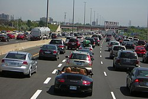

Un automóvil, también denominado coche, carro, auto, entre otros; es un vehículo motorizado con ruedas utilizado para el transporte. La mayoría de las definiciones de automóvil, hacen referencia a los vehículos que circulan principalmente por las carreteras, con capacidad de uno a ocho personas, cuentan con cuatro neumáticos y transportan principalmente a personas, antes que mercaderías.
En Estados Unidos, los automóviles rápidamente reemplazaron a las carretas y vehículos a tracción a principios del siglo XX, mientras que en otros continentes como Europa, el proceso de reemplazo fue más lento
El automóvil tiene su origen a finales del siglo XIX, cuando en el año 1886, el inventor alemán Karl Friedrich Benz patentó su Benz Patent-Motorwagen. Sin embargo, estos vehículos recién estuvieron ampliamente disponibles durante el transcurso el siglo XX, y las economías desarrolladas se volvieron dependientes de ello. Al final del siglo XX, los automóviles fueron adquiriendo varias funciones a favor de la comodidad y seguridad de los pasajeros, como el airbag, alarma antirrobo, aire acondicionado, levantavidrios eléctricos, GPS, cámara y los sensores de estacionamiento, sistema de entretenimiento como el autorradio táctil, entre otros.
En la actualidad, aún la mayoría de los automóviles son propulsados por motores de combustión interna, aunque cada vez más gana mercado los automóviles híbridos y eléctricos, con el propósito de mitigar los efectos del calentamiento global.
El primer automóvil con motor de combustión interna se atribuye a Karl Friedrich Benz en la ciudad de Mannheim en 1886 con el modelo Benz Patent-Motorwagen.5 Poco después, otros pioneros como Gottlieb Daimler y Wilhelm Maybach presentaron sus modelos. El primer viaje largo en un automóvil lo realizó Bertha Benz en 1889 al ir de Mannheim a Pforzheim, ciudades separadas entre sí por unos 105 km.6 Cabe destacar que fue un hito en la automovilística antigua, dado que un automóvil de esta época tenía como velocidad máxima unos 20 km/h, gastaba muchísimo más combustible de lo que gasta ahora un vehículo a esa misma velocidad y la gasolina se compraba en farmacias, donde no estaba disponible en grandes cantidades
Tara: masa del vehículo con su dotación completa de agua, combustible, lubricante, repuestos y accesorios, sin pasajeros ni carga.
Masa en orden de marcha: tara+conductor de 75 kg (para autobuses y autocares +acompañante de 75 kg).